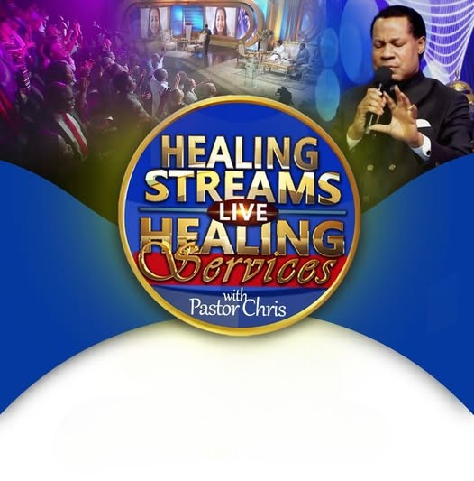

Resources
 Resource Portal
Access all Pre-HSLHS, HSLHS Program, and Post-HSLHS materials, including committee logistics, ministry resources, retainership tips, and more.
Admin
Admin Dashboard
Analytics, reporting, and administrative tools for Healing Streams team members.